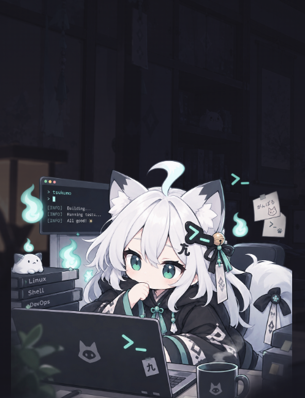

若葉の間
DA
仕事
会話
キャラ
トークン
成果
新しいセッション · 若葉の間 DA
まだやり取りは無い
何から始める？
tsukumo のおすすめ。「始める」を押すと、すぐに頼んで作業が始まる。
GH-202
いちばんのおすすめ
ブラウザの束（4MB・未圧縮の1ファイル）を縮め、
highlight.js
とレポートの描画一式を初期読み込みから外せるか決める
画面の初めの読み込みが重い。ほかの直しより先に効いてくる
1
始める
GH-209
ブラウザの部品とフックの描画中に時計を読む呼び出しを検査で落とす
小さく片づく。肩ならしにちょうどいい
2
始める
GH-281
ホストを設定で選べるようにし、orca 以外で開く実装を足して、
main.ts
の orca の直呼びを
Host
に寄せる
大きめ。時間のとれる日にまとめて
3
始める
ほかの始め方
自分で書く
/
タスクの一覧から選ぶ
前のやり取りを見る
←

ログ
TSUKUMO
おはよう。今日は GH-202 からがいいと思うぞ。押せばすぐ取りかかる。
依頼
所要
0秒
送信
⌘⏎
使う人の立場で
並べるのは「次に着手できる」ではなく tsukumo の「おすすめ」。1枚目を広く「いちばんのおすすめ」にし、迷ったら左上を押せばいい形にする
どの札にも、おすすめの理由を tsukumo の顔と一緒に1行（「ほかの直しより先に効いてくる」など）。選ぶ手がかりになる
押すとすぐ頼む。ボタンの言葉を「始める →」にして、入力欄を経由しないことを言葉で伝える
キーボードでも 1・2・3 で始められる
寸法・ふるまい
札：3列（1.3 : 1 : 1）・間 12・角丸 14・最小の高さ 196
いちばんのおすすめ：浅葱の札・浅葱の地・ボタンも塗り。ほかはホバーで塗りになる
理由 12.5px、顔 18。題は3行まで
タスクが無いときは「自分で書く」を大きく、おすすめは出さない
おすすめの決め方（作る側へ）
理由の1行は tsukumo（AI）がタスクの中身から書く。並び順も tsukumo が決める
理由は「効き目」「軽さ」「つながり（前の作業の続き）」のどれかが分かる言い方にする
数を競わせる言い方（「最速」「いちばん多い」など）はしない